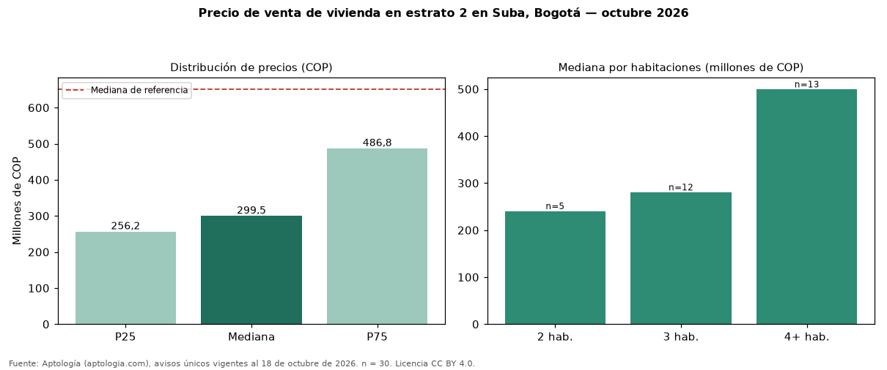

Precio de venta de vivienda en estrato 2 en Suba, Bogotá — octubre 2026
En Suba, Bogotá, la mediana de precio de venta de vivienda en estrato 2 es COP 300 millones (n = 30 avisos únicos). Eso es 54 % menos que la mediana de toda la oferta de venta en Suba (COP 650 millones). Por metro cuadrado, la mediana es COP 3.779.777/m² (−32 % frente a COP 5.555.556/m²). Por habitaciones: 2 habitaciones, COP 240 millones (n = 5); 3 habitaciones, COP 280 millones (n = 12); 4 o más habitaciones, COP 499 millones (n = 13). El área mediana es 84 m² (referencia: 116 m²). El rango intercuartílico va de COP 256 millones a COP 487 millones (razón 1,9). La antigüedad mediana declarada es de 15 años. Datos abiertos CC BY 4.0 de Aptología; fuente y búsqueda de inmuebles: https://www.aptologia.com/estrato-de/bogota/suba. Archivos: PDF de 2 páginas, CSV con las cifras y gráfica PNG.

| Avisos únicos | 30 |
|---|---|
| Percentil 25 | COP 256.250.000 |
| Mediana | COP 299.500.000 |
| Percentil 75 | COP 486.750.000 |
| Mediana por m² | COP 3.779.777 |
Fuente: avisos vigentes de portales inmobiliarios recopilados por Aptología, deduplicados (mínimo 30 avisos únicos por celda). Precios pedidos, no cerrados. Fecha: 2026-10-18.